Demo 09: Input Queue
This demo shows how to use an input queue to input a sequence of actions.
Documentation
Be sure to view the overall Documentation for configuring
the cloud storage (API key, Base ID, etc) and for more information on how the entire system works.
Airtable Setup
The "Name" column has an multiline text entry "comamnds" that will hold the updated
set of commands being sent from the Textarea. Note that this list of commands is formatted
to have one (text) command per line, separated by newline characters.
NOTE: the Value column is of field type "Long text"
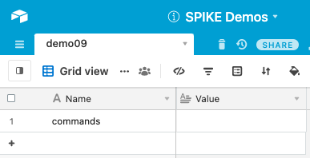
In Airtable, to change the type of a column, use the "Customize field type"
option to select "Long text" as the type of the Value. This allows
long multiline text that includes "new line characters."
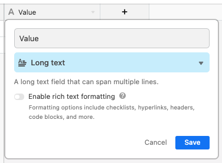
Remote Page Setup
Service Dock
The remote page has the Airtable Service Dock element. Make sure to
update the tablename attribute to match your table name.
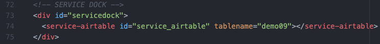
Remote Interface
There are two parts to the remote interface:
- The Queue interface, which allows the user to enter and
manipulate commands within the queue.
- The Form Input with Textarea that submits the sequence of
commands to the cloud.
To note:
- All the queue interface buttons call JavaScript functions that
manipulate the queue (see descriptions below)
- The Form Input with Textarea interface has an extra "onclick"
function for the submit button that, when clicked, takes all the
contents from the Queue and enters it into the Textarea prior to being
submitted.
- The Textarea can be hidden by adding the
style='display: none'
attribute to the textarea. It will still be in the page and still be used
for moving data from the Queue to the Cloud, but won't be visible to the user.
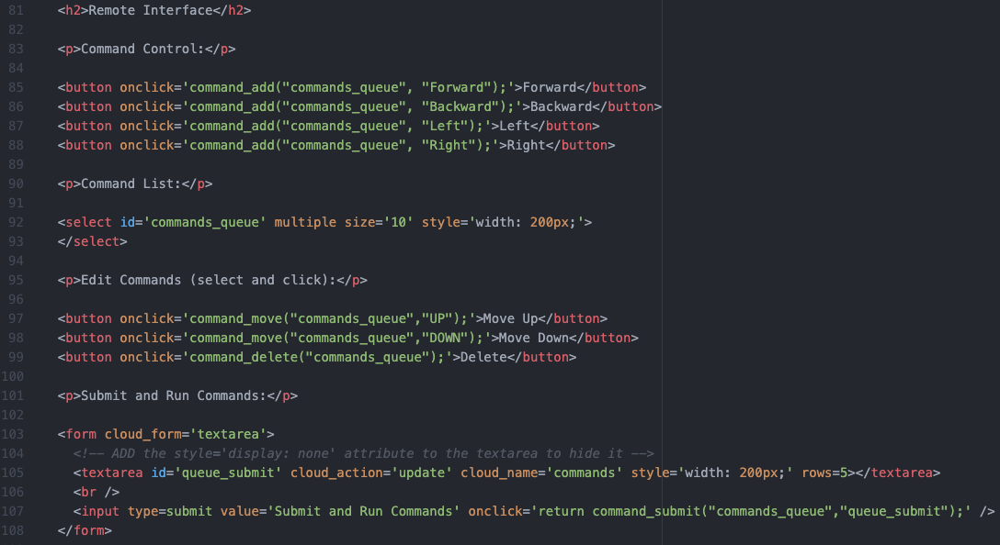
This is how the interface will look on the Remote Page:
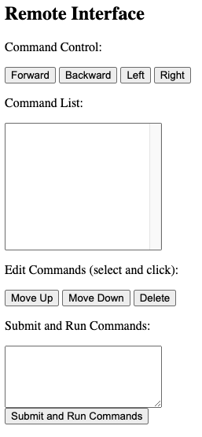
Here are the JavaScript functions used by the Queue Interface:
command_add: this adds a new element to the Queue.
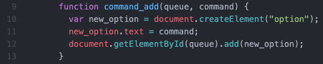
command_move: this moves element(s) (one or more) up or down
within the Queue.
The code is from here.
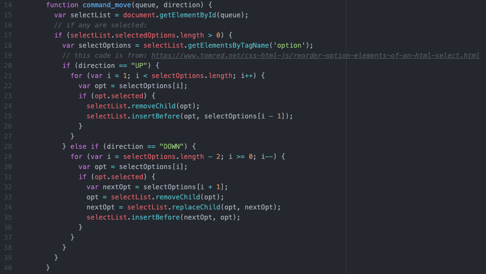
command_delete: this goes through the Queue and deletes any
selected items. It needs to go "back to front" because the index position
changes as items are deleted.
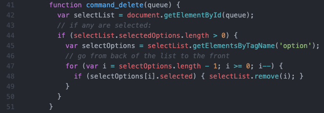
Here is the JavaScript function for moving items from the Queue to the Textarea
before submitting to the cloud:
command_submit: this goes through all options in the Queue and
adds them all to the Form Input with Textarea before it is submitted.
It adds a newline character between each command.
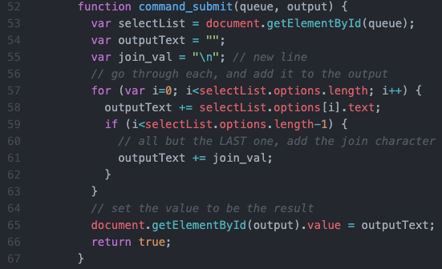
Local Page Setup
Service Dock
The local page has both the Airtable Service Dock element (make sure
to update the tablename attribute to match your table name).
There is also a single SPIKE Prime Service Dock element.
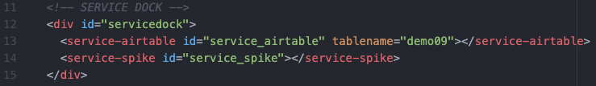
Local Interface
The local page is the same as Demo 08b: Form Input with Textarea. When the
list of commands changes, the commands are inserted into the code (via a Replace)
and the code is then downloaded and run on the SPIKE Prime.
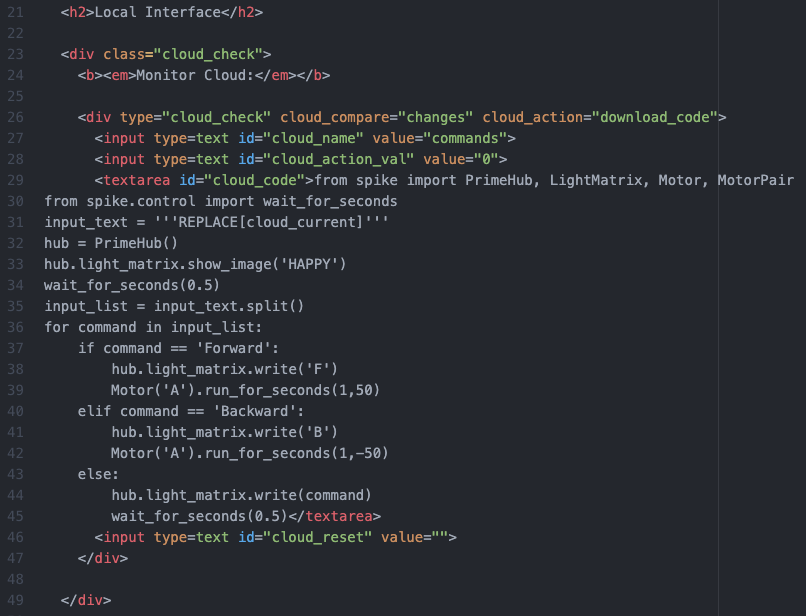
This is how the element will look on the Local Page:

This is the MicroPython code sitting in the textbox:
from spike import PrimeHub, LightMatrix, Motor, MotorPair
from spike.control import wait_for_seconds
input_text = '''REPLACE[cloud_current]'''
hub = PrimeHub()
hub.light_matrix.show_image('HAPPY')
wait_for_seconds(0.5)
input_list = input_text.split()
for command in input_list:
if command == 'Forward':
hub.light_matrix.write('F')
Motor('A').run_for_seconds(1,50)
elif command == 'Backward':
hub.light_matrix.write('B')
Motor('A').run_for_seconds(1,-50)
else:
hub.light_matrix.write(command)
wait_for_seconds(0.5)
During testing, the following example was coded in CodingRooms and tested
prior to being added to the code. This tested the concept of having a
multiline list of commands, parsing the list
(splitting),
and processing each command individually.
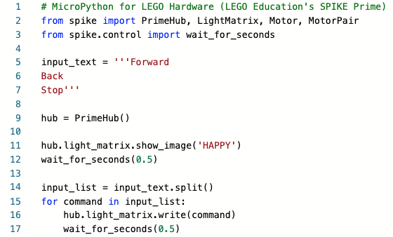
Demo 09 Quick Links:
Return back to the main homepage.